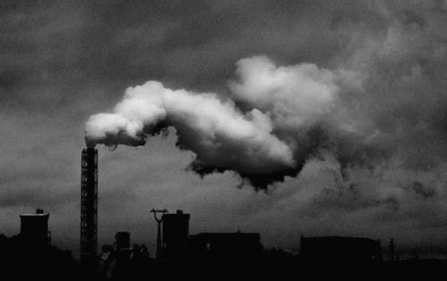

POLLUTION

Intro - Pollution
Pollution is a global problem. It is the introduction of harmful materials into the environment. Pollution can take the form of any
substance (solid, liquid, or gas) or energy (such as radioactivity, heat, sound, or light). Pollutants, the components of pollution,
can be either foreign substances/energies or naturally occurring contaminants. Although environmental pollution can be caused by natural
events, the word pollution generally implies that the contaminants have an anthropogenic source — that is, a source created by human
activities. Pollution is often classed as point source or nonpoint source pollution. In 2015, pollution killed 9 million people worldwide.
Major forms of pollution include air pollution, light pollution, litter, noise pollution, plastic pollution, soil contamination,
radioactive contamination, thermal pollution, visual pollution, and water pollution.
More on Pollution
Noise Pollution
Noise pollution, also known as environmental noise or sound pollution, is the propagation of noise with ranging impacts on the activity
of human or animal life, most of them harmful to a degree. The source of outdoor noise worldwide is mainly caused by machines, transport,
and propagation systems Poor urban planning may give rise to noise disintegration or pollution, side-by-side industrial and
residential buildings can result in noise pollution in the residential areas. Some of the main sources of noise in residential areas
include loud music, transportation (traffic, rail, airplanes, etc.), lawn care maintenance, construction, electrical generators, wind
turbines, explosions, and people.
More on Noise Pollution.